Project Details
Type: Electronic repair services, Technician-facing
Company: UNIS
Platform: Mobile
Started: March 2019
Team: 2 UX/UI Designers, 1 Front-End Dev, 1 Full-Stack Dev, 2 Back-end Eng, 1 Business Analyst, 1 Project Manager
Tools: Figma, Jira, Trello
Summary
Service Center Team (SCT) was a national provider of in-home services for manufacturers, extended warranty companies and retailers that was acquired by UNIS. With VIZIO, Samsung, and Sony as our biggest vendors, if their end users report any defects to their TVs under warranty, UNIS sends a service professional to diagnose and repair the issue.
With the lack of an app, on-site repair technicians would go through an archaic process, traveling with stacks of paperwork and tools which later had to be logged in the internal Fields Service Management (FSM) portal at home.
The Kick-Off
When I state that this project started in March, I mean to point out that the goal was set — the UNIS Field Service Management (FSM) team needed an app and the project was set in the design team's agenda as it's been long delayed. The concept of this execution? Not so much.
Our product team first had continuous meetings with the C-suite executives but their initial idea was jumping to centralize current UNIS apps, which deal with other logistics needs, into one and then add FSM-related functions. This would not only be a frustration to us as each app was coded and designed in different languages and style guides, but a master UNIS app would be the least beneficial to the users. In a broad perspective, our current deal with the main goal that users have a set of tasks they must complete. However, they each deal with other branches of the logistics industry, meaning different user groups. In this case, a technician who repairs at-home electronics does not have the same background as a truck driver.
Fortunately with enough rhetoric involving time, budget, and other factors, that idea was scrapped and our product team moved to start the product development cycle.
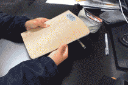
The holy bullet point notebook of all things Uniservice. Publishing this as a grievance because I can no longer find this notebook.
🚩 Problem
How can field service workers streamline their to-do tasks all together and on-the-go?
Initiating User Research
User research for this product was done from the bottom-up as this was related to a different branch of the logistics industry than what the team previously worked on. Because UNIS on-site service technicians are located nationwide (and unfortunately not in Southern California), we interviewed remotely with the core tech team with members spread across the Bay Area, Canada, and Georgia along with indirect stakeholders such as the Customer Service Rep team and managers.
From contextual inquiries and analysis, we derived insights and pain points of the current FSM web portal and workflow, personas, and user requirements. We carefully recorded questions and answers through a collaborative document so we could refer back to it with stakeholders and if we were to lose our trail in the future.
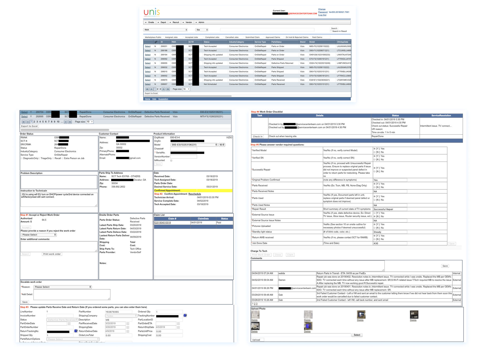
Current UNIS FSM web portal that went under a heuristic review.
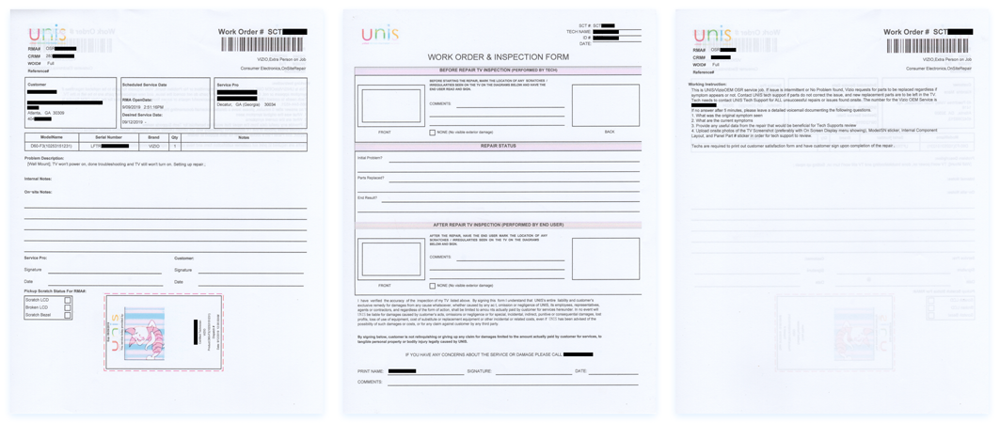
Sample paperwork used by technician per customer.
The Typical Technician Workday:
- Check-in on mobile or tablet browser once they're on the way or arrived at a customer's location.
- Take photos, jot detailed notes of before and after repair on inspection forms.
- Diagnose and repair device.
- Customer and technician sign off inspection forms, must note if repair is successful or not.
- Check-out on mobile or tablet browser.
- Repeat steps 1-5 multiplied by number of jobs they need to complete that day (usually 5-8).
- Come home to upload photos, log notes, and mark used/unused parts to return on web portal via desktop browser. Prepare tools, parts, and paperwork + print agenda and list of customer addresses and numbers for next day's jobs.
- Ship defective/used parts back to service provider altogether, 1x/wk.
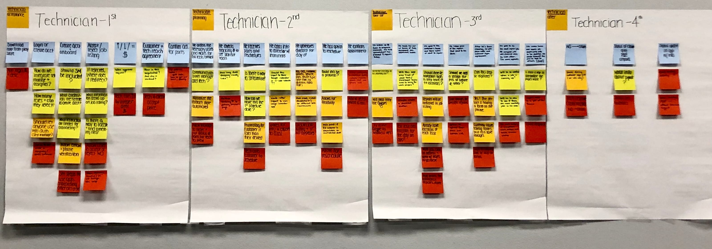
Scenario mapping to collectively understand the user workflow, also as a precursor to pinpoint new ideas and find the right problems to solve. This made the main challenge clear: How could we optimize this process?
Because this product would be directly used internally for UNIS service providers in its first product life cycle, market competition wasn't too much of a hindrance. Nevertheless, the inclination to use third-party apps was visible so we did a competitor analysis and perceptual mapping to note areas of SWOT.
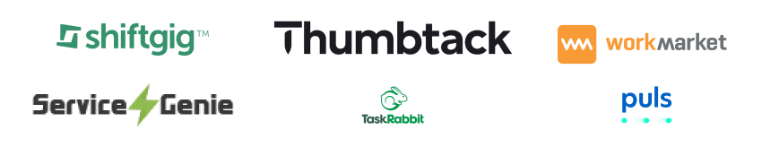
Competitors related to the project goal.
Challenge & Opportunity (1)
Designing for Demographics
Because the web portal interface hadn't changed even before SCT's acquisition in 2010s, an insight was that long-term employed techs were so compliant to the current workflow that using the FSM portal to log their documents was muscle memory.
Their concerns geared towards the ubiquitous of the flow, bugs, and responsiveness of opening the web portal in their mobile browser. Though an updated UI would greatly help inhibit teams from considering third-party apps.
In that case, our team considered how a mobile app could benefit newly hired techs, most who are recent college grads with degrees relating to engineering, CS, or hardware. We had to consider the visual boundaries and straightforwardness for the next gen.
A future issue could be that a non-existent app or an old UI could deter young candidates since in trend, the number of service techs decreased in recent years. Not necessarily a correlation that could be correct, but a valid concern.
Determining Requirements
Before we could ideate, we reviewed a draft of user requirements with our PM and BAs so they could relay their drafted business requirements. By cross-identifying the user versus business needs, we formulated product requirements that would jumpstart the design process.
We then communicated with our dev team overseas to note which interactions are realistic to create by matching existing APIs. By letting the back-end engineer know early on, it prevented obstacles that were seen in previous projects. At that time, we also finished the first iteration of the UNIS Design System (coded by our other dev team located elsewhere) so it was inherent to let our FSM front-end dev aware of the style we were going for. By utilizing this design system on a new project, it would set the direction of brand consistency.
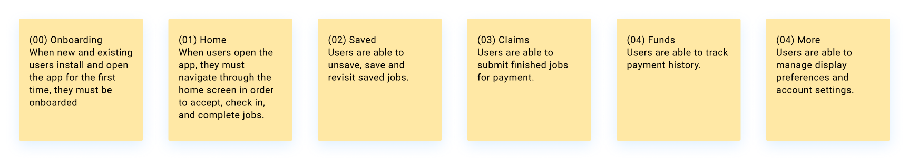
Sample Product Requirements.
Creating a Base Flow
We mapped out a base user flow to pivot us in a clear direction. This method helped sketch out areas of concern, edge cases we needed to consider, and opportunities we could hone prior designing. By presenting products of our methodologies at feedback sessions, it paved the way to holistically look at each function, how they could connect, and questioning sequences to prevent more prototype iterations in the long-run.
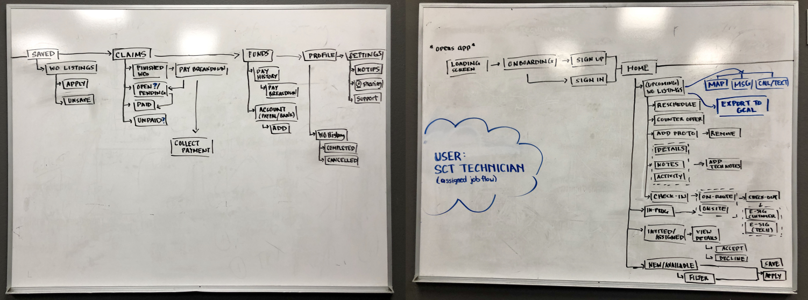
Proposed user flow diagram for feedback.
Challenge & Opportunity (2)
Adaption to Uncertainty
This is more so of an external factor, but right before the design process started our team lost a strong player along with a hiring freeze for the remainder of the year. Fortunately, we gathered enough contextual and user research, but initiating rapid prototyping solo can be daunting.
Another external issue was that because FSM isn't prioritized as high as the other management systems dealing with warehousing and transportation, in the beginning, this project was passed around management. Different opinions, different outlooks. This later led to a major disruption late in the iterations to add a new user requirement that would greatly shift the information architecture, components, and design.
Now adapting to workplace and project changes can be a blog post on its own, but the key point is that embracing the disruption strengthens flexibility and there's truth to that. Staying positive with your team, re-strategizing, making thoughtful decisions, and taking charge of processes are one of the many ways that helped this project move forward.
Workplaces and products must be dynamic to succeed, even if it's out of your control. People come and go and roadmaps never stay on the same route, so it's hectic! But I've come to realize that these inevitable changes are valuable and product multi-dimensions thinking. Nonetheless, a vital reason why my UX/UI skills are where they are at right now.
Ideate / Create / Iterate
As you can tell so far, research was the principal of this project and the motive to why it was finally launched to the design stage. Once we put together a feasible information architecture, I started rapid prototyping through low fidelity to present for concept validation and feedback to stakeholders. Although stakeholders generally prefer high fidelity by default, introducing them to the initial concepts helps commit their support in the later product development phases.
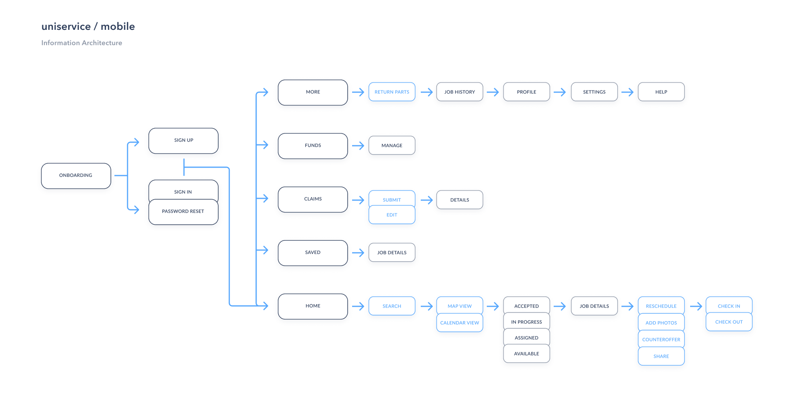
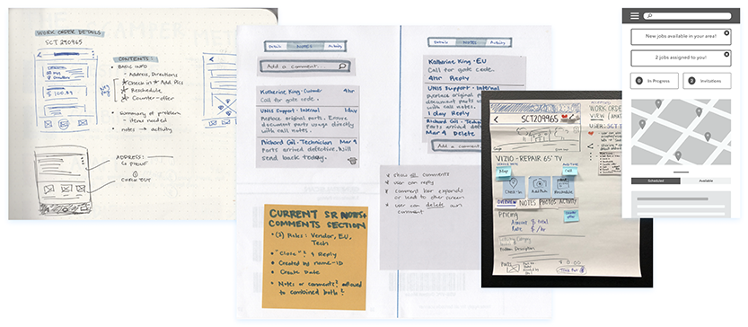
Early prototyping on paper, easel pads, and lo-fi wireframes. Fun fact: At this stage, our whiteboard broke! 😭
Design Decisions
With the budget set aside for this project, the first product lifecycle of this app would be Android-based. To adapt to Android user behaviors, I revisited the UNIS Design System we made previously to make it cater to Material Design as I started drafting high fidelity prototypes.
But of course, even hi-fi prototypes has its flaws that we don't see until usability testing and feedback.
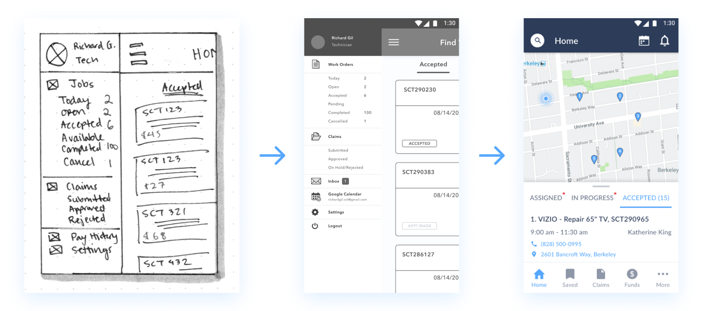
Hamburger menu was hashed to bottom navigation in initial iterations to make core functions directly visible and easy to reach at thumb's distance.
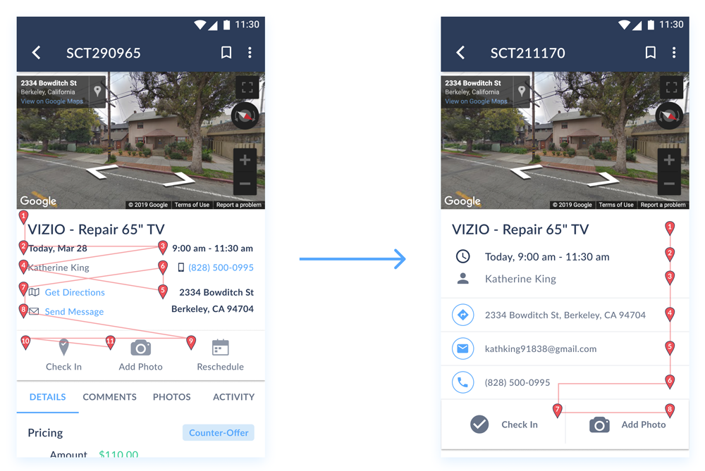
Eye-tracking in usability testing displayed a red flag when techs viewed job details and activated anchor links. By Fitts's Law, this was alleviated by rearranging the actions to a direct, vertical navigational access.
Challenge & Opportunity (4)
Cat & Mouse Edge Cases
Catching all the possible edge cases earlier on so users don't get stuck in a wormhole feels like detective work. It's exciting to find one immediately, but finding what you missed later on can give you some trust issues.
During design feedback reviews, our team thought more carefully about alternate technician user flows, user testing results, documented questions and answers to stakeholders.
Developer Hand-Off
With an overseas dev team, I made sure when designs are ready for developments, they're shipped in a concise, detailed-oriented manner:
- Cleaned, grouped, and renamed layers/frames on Figma, convert to screen flow diagrams to be accessible to viewers
- Exported frames to Zeplin, also containing master style guide and component library
- Submitted JIRA tickets under the corresponding epic with all relevant links, attachments, acceptance criteria, interaction examples, and user stories
- JIRA, Zeplin, and Figma contain its own version history but there's no way to intersect them! (Possibly an idea for a future plug-in?) So I created and managed a Product Backlog for our design/dev team to track outgoing tasks
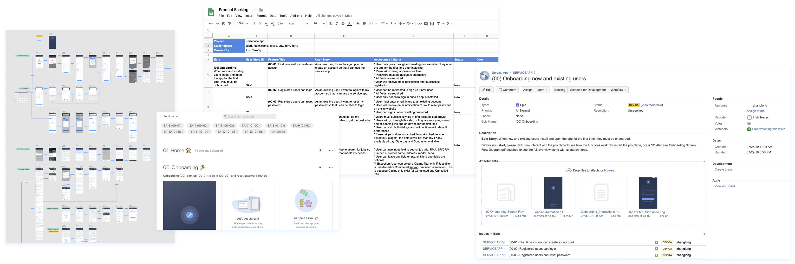
Deliverables for development.
Challenge & Opportunity (5)
Communication for Implementation
This is a constant challenge of itself because, from other designers I've spoken with, the best hand-off process depends on the team and project. Onboarding engineers early on could only go so far when there's a heavy language barrier in place.
Because our dev team is overseas and their English was not advanced and my Mandarin was non-existent, we consolidated by doing a trial and error of hand-off processes which resulted in the working flow list above but there's always room for revisions (along with a translator).
What Happened Next?
After this was launched to their beta group of on-site technicians, it gave us a sample user behavior feedback. At this time, I left UNIS so I could not see a larger scale result of our labor.